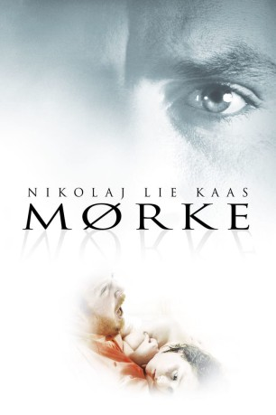

#10462 Todeshochzeit - Niemand sollte alleine sterben
 
 IMDB-Wertung: 6.8 / 10
IMDB-Wertung: 6.8 / 10  Metascore: 0
Metascore: 0 
Das gottverlassene Dorf Mørke in der dänischen Provinz findet man auf keiner Karte. Der Journalist Jacob folgt seinem Ex-Schwager Anker dorthin, nachdem sich seine auf den Rollstuhl angewiesene Schwester Julie noch in der Hochzeitsnacht das Leben genommen hat. Jacob und seine Familie sind fassungslos, niemand kann ihren Selbstmord nachvollziehen. Als er seinen Schwager Anker in Mørke ausfindig macht, steht dieser erneut kurz vor der Eheschließung - und wieder sitzt die Frau im Rollstuhl. Kann das noch Zufall sein, oder ist es das Muster eines verrückten Serienkillers, der behinderte Frauen heiratet und sie in der Hochzeitsnacht ermordet? Jacob findet keine Ruhe mehr. Mit aller Kraft sucht er nach den Ursachen des Todes seiner Schwester.
Jahr: 2005
Dauer: 119 Minuten
FSK: 16
Land: Dänemark Studio: Nordisk Film BiografdistributionTonspuren:
Untertitel:
Auflösung: 720p (1280x696) Größe: 2539 MB
Genre: Thriller, Drama
Regisseur: Jannik Johansen
Drehbuch: Anders Thomas Jensen, Jannik Johansen
Soundtrack: Antony Genn
Darsteller:
 Nikolaj Lie Kaas als Jacob
Nikolaj Lie Kaas als Jacob Nicolas Bro als Anker
Nicolas Bro als Anker Laura Drasbæk als Nina
Laura Drasbæk als Nina- Lisbet Lundquist als Caroline
- Anne Sofie Espersen als Sonja
- Lærke Winther als Hanne
- Morten Lützhøft als Carl
- Lotte Bergstrøm als Julie
- Lars Lunøe als KA Hjort
- Søren Thomsen als Onkel Svend
- Hother Bøndorff als Joan / Rikkes far
- Ane Vinther als Joan / Rikkes mor
- Katrine Hartmann als Rikke Bjerre
- Jørgen Lysemose als Bryllupspianist
Datei: X:\2005(N-Z)\Todeshochzeit - Niemand sollte alleine sterben (2005, FSK16, 1280x696).mkv seit 10.01.2019
Festplatte: HD 2005(G-Z)-2006(A-Z)
 Es gibt insgesamt 50 Filme in der Gruppe '2005(N-Z)'
Es gibt insgesamt 50 Filme in der Gruppe '2005(N-Z)'